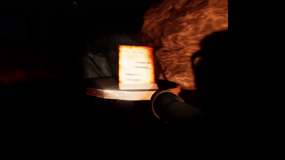
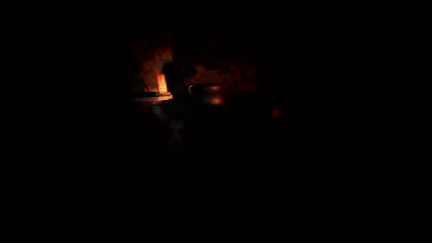

My approach
While my partner worked on the map layout in our main level using some nice assets we found on the Unreal market I decided to start prototyping in my own size level. I knew that the ghost for the game would be the main centerpiece so I started on that first. I started by thinking about other horror games and what makes them scary. Aside from sounds which is always important they all also seemed to utilize jump scares and some kind of chase mechanic. The jump scare doing well immediate scares and the chasing doing the "edge of the seat kinda suspense" as the player tries to run away. So I went about implimenting these behaviours for our ghost. He sometimes spawns in front of player and chases them and can also spawn behind the player to do the same thing. With just these two mechancis we realized quickly that it wasnt enough at all, they worked but they got too repetative.
So I did some more research (aka played some horror games) and also found that in some games every scary moment that happens doesnt involve the player getting directly attacked. A lot of the time the main enemy will just walk past a hallway ahead of them or some kind of object will do the scaring. So I also decided to try and adopt these two mechanics. I started with the "ghost objects" which were pretty simple. I made a basic blueprint that could be given any mesh and when the player gets within an adjustable range the object would get thrown at somewhat towards the player.
I decided to tackle the "ghost wondering" next. This was a little more challenging because I realized you couldnt just spawn the ghost in randomly and give him a random direction to move since he might just spawn and walk right into a wall never getting seen by the player. So I made a little algorithm that runs everytime the ghost goes to spawn in. Once the location within the map gets selected a ray is shot downwards until it hits the floor so we can spawn the ghost there and he isnt too high or too low into the ground. Once we have that a number or rays get shot out in a circle around that point. The reason for this is that we can keep track of how far each of those rays travel before hitting a wall. With this we are able to tell which direction has the most space for the ghost to travel. In other words the ray with the farthest distance to its hit is the direction that the ghost travels in. This increases the odds of the ghost getting seen by the player much much higher.


The clip on the left demonstrates out object based gameplay. The paper by the fire gives the player three objectives in the cave to locate and as the player does that they get scratched off the paper. As this happens the ghost also gets more aggresive, the more objectives the more aggresive.
The clip on the right deomstrates our "fear" mechanic. As the player looks at the ghost they build up fear which shows itself as the player lossing their vision (this is also the death condition, if the player losses their sight all the way they die as a result). The clip also shows how the fire is like the players safe zone because it strips away the fear much much faster than it goes away natrually.
Challenges Faced and Things Learned
Another main challenge both my partner and I had to deal with is how this game was pretty much our first experience in doing something semi large scale in Unreal engine. We had limited experience with using it prior, but we had done nothing like this before. So naturally there were hurdles that needed to be jumped over and things we had to learn as we went along. But because we did our own research on the topics we did not know, I became that much stronger on that particular topic. It could become grueling at the time, but looking back, it has made me all that much better at using Unreal